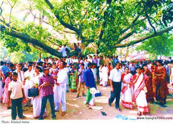

Bangladeshi primarily a Muslim country & conservative country so there are certain things one should not wear. The choices of dresses are quite different according to gender, age, occasion and many other things. Some of which are described below:
Attire for Men
A cotton lungi and a jersey called kurta are the common attire for men in rural areas. A lungi is a loop of cloth, somewhat like a very, very loose skirt or a sarong. Sometimes wear a shirt–pant or suits for a formal look. Many young boys love to wear a t-shirt, short pants etc.
Attire for Women
Shari is the main traditional dress of Bangladeshi women. But some young female also wears salwar kameez. Muslim girls also a special kind of attire called niqab. It is an Islamic dress code.
Attire for Children's
The girls mostly wear frocks the also wear skirts, long frocks etc. and the boys wear short pants & half sleeves t-shirt.

Occasional attire
In different occasion, Bangladeshi people wear different kinds of dresses. Such as in pohela baishakh Bengali women wear white Shari with red border and men wear white Panjabipajamas. In a wedding or some special occasion like Eid-party, they wear special dresses.
